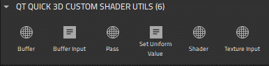

Custom Shaders
You can use the 3D shader utilities and commands available in > Components > Qt Quick 3D > Qt Quick 3D Custom Shader Utilities to create your own effects and materials.
If the custom shader utilities are not displayed in Components, add the QtQuick3D module to your project, as described in Adding and Removing Modules.
Note: If you select Qt 5 as the Target Qt Version when creating your project, the available custom shader utilities and their properties will be slightly different, and some of the components can be found in different locations in Components.

You can find additional shader utilities, the Effect and Custom Material components, in Components > Qt Quick3D > Qt Quick 3D.

Note: In Qt 5 the Effect component is located in Qt Quick 3D Effects > Qt Quick 3D Custom Shader Utilities. To use the Effect component, add the QtQuick3D.Effects module to your project.
Note: In Qt 5 the Custom Material component can be found in Qt Quick 3D Materials > Qt Quick 3D Custom Shader Utilities. To use the Custom Material component, add the QtQuick3D.Materials module to your project.
For more information about using the shaders, see Custom Effects and Materials.
See the following tables for available shader utilities and commands.
Available Custom Shader Utilities
| Custom Shader | Qt 5 Only | Description |
|---|---|---|
| Buffer | A buffer to be used for a pass of Custom Material or Effect instances. The Name property identifies the Buffer instance. When the value of this property is empty, the buffer will refer to the default output texture of the render pass instead of allocating a buffer. This can be useful to override certain settings of the output, such as the texture format, without introducing a new, separate intermediate texture. The Format property specifies the format of the buffer. The Filter property specifies the filter operation when a render pass is reading a buffer that differs in size in comparison to the current output buffer. The Coordinate operation property specifies the texture coordinate operation for coordinates outside [0, 1] range. Select the ClampToEdge operation to clamp coordinates to edges. The Repeat operation wraps the coordinates at the edges to tile the texture, while MirroredRepeat also mirrors every other repeat of the texture while tiling it. The Allocation flags property defines allocation flags for the Buffer instance. Select SceneLifeTime to allocate the buffer for the whole lifetime of the scene. Size multiplier specifies the size of the Buffer instance. Value of 1.0 creates a buffer with the same size, while 0.5 creates a buffer with width and height halved. | |
| Custom Material | The base component for creating custom materials used to shade model instances. The Shading mode property specifies whether the material is Shaded or Unshaded. The Vertex shader and Fragment shader properties define the vertex and fragment shader files for the material. Select the shader files from the dropdown menus. You can select The Source blend and Destination blend properties specify the source and destination blend factors. The Always dirty property determines whether the material is refreshed every time it is used. The Line Width property defines the width of the lines when the geometry is using lines or line strips. Specify the attributes of the Custom Material by defining the Transparency, Refraction and Always dirty properties. The Shader Info specifies the shader info of the material. For more information, see Custom Effects and Materials. Note: In Qt 5 you can also define render passes for Custom Material instances by using the Passes property, which lists render passes implemented by the material. | |
| Effect | A base component for creating post-processing effects. The Passes property contains a list of render passes implemented by the effect. You can add more entry fields to the list by selecting | |
| Pass | A render pass of an Effect instance. In Qt 5 you can also use render passes for Custom Materials. The Commands property specifies the list of render commands for the Pass instance, while the Shaders property lists the shaders for it. Use the dropdown menus to select the render commands and shader files of your choice. The Buffer property specifies an output buffer for the Pass instance. | |
| Shader | A container component for defining shader code used by Effect instances. The Source property specifies the shader file to be used by the Shader instance, and the Stage property defines a Vertex or Fragment stage for it. Note: In Qt 5 you can also set the Stage property to Shared, Geometry, or Compute. | |
| Shader Info |  | Basic information about custom shader code for Custom Materials. The Version property specifies the shader code version, while the Type property defines the shader code type. The Key property specifies the options used by the shader using the combination of shader key values, such as diffuse or specular lighting, refraction, transparency, displacement, transmissiveness, glossiness, and alpha cutout. The Key property specifies the options used by the shader using the combination of shader key values. Use the dropdown list to select the one of available shader keys:
|
| Texture Input | A texture channel for Custom Material and Effect instances. The Texture property specifies the texture to input, while Enabled determines whether the texture is enabled. In Effect instances, setting Enabled to false causes the shaders to sample a dummy, opaque black texture instead of the one specified by texture. |
 to add new shader files to the dropdown menus.
to add new shader files to the dropdown menus. . For more information, see
. For more information, see Available Custom Shader Commands
| Command | Qt 5 Only | Description |
|---|---|---|
| Blending | | A pass command that specifies the source blending function. The Source property specifies the source blending function, while the Destination property specifies the destination for it. |
| Buffer Blit | | A copy operation between two buffers in a pass of a Custom Material or an Effect. The Source and Destination specify the source and the destination buffers for the copy-operation. |
| Buffer Input | An input buffer to be used for a pass of a Custom Material or an Effect. The Buffer property specifies the input buffer for an instance of the Pass instance. The Parameter specifies the name of the input parameter in the shader. | |
| Cull Mode | | A culling mode for a render pass. The Mode property specifies the culling mode in a pass when the State property of the Render State is set to CullFace. Use the dropdown menu to set the culling mode to BackFaceCulling, FrontFaceCulling, or NoCulling. |
| Depth Input | | An output texture for the depth buffer. The Parameter property specifies the name of the texture the depth buffer will bind to. |
| Render State | | The render state to be enabled or disabled in a pass of a Custom Material or an Effect instance. The State property specifies the render state to enable or disable in a pass. Use the dropdown menu to set the State to Blend, CullFace, DepthTest, StencilTest, ScissorTest, DepthWrite, or Multisample. The Enabled property defines the Enable state for the Render State. |
| Set Uniform Value | A value to be set during a single pass. The Target property specifies the name of the uniform that will have its value changed during the pass, while the Value specifies the value that will be set on the target uniform. |